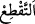
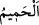
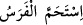
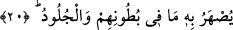
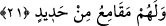

“çekişen” cenk ve cedel eden “iki hasımdır:”
Her iki gurup da kendisinin hak, karşı tarafın ise bâtıl üzere olduğuna inanıyordu. Her
ne kadar aralarında karşılıklı konuşma ve çekişme olmasa da her iki gurubun sözleri ve
fiilleri diğer guruba göre husûmet üzere binâ olunmuştu.
Hak dinin mensupları ile diğer milletlere/dinlere bağlı olanlar sebep ve illet öne
sürmeksizin birbirlerine düşman oldular.
Âyetin bundan sonrası “muhakkak ki Allah, bunlar arasında kıyâmet gününde
(ayrı ayrı) hükmünü verir.” (el-Hac, 22/17) ifâdesinde öz olarak anlatılan hususu
açıklamaktadır:
“İmdi, inkâr edenler için ateşten elbiseler biçilmiştir.”
parça parça kılmak
demektir. Burada kastedilen onların cüsseleri mikdârınca takdir edilmiş, belirlenmiş
demektir. Yâni elbisenin onu giyeni kuşattığı gibi onları korkunç ateşler kuşatır.
“Onların başlarının üstünden kaynar su”; yâni sıcaklığı son dereceye ulaşmış sıcak
su “dökülecektir!” O sudan bir katre dünya dağlarının üzerine damlatılsa onları eritirdi.
Râğıb der ki: “
” harâreti şiddetli olan sudur. Ter, benzetme yoluyla “hamîm” diye
isimlendirilmiştir. “
” At terledi, demektir. Hamama “el-hammâm” denilmesi
ya insanı terlettiği için ya da orada sıcak su bulunduğu içindir. Hummâya bu ismin
verilmesi, ya onda aşırı harâret olduğundan ya hummâ olan kimse terlediğinden ya da
onun ölümün (el-himâm) emârelerinden olmasındandır.
20. Bununla, karınlarının içindeki (organlar) ve derileri eritilecektir!
“Bununla,” yâni bu kaynar suyla aşırı sıcak olması sebebiyle “karınlarının içindeki”
bağırsaklar ve iç organlar “ve derileri eritilecektir!” Bu kaynar su derilerini kızartır ve
döker. Yâni kaynar su başlarından dökülünce aşırı sıcaklığından onların dışlarına tesir
ettiği gibi içlerine de işler. Derilerini erittiği gibi iç organlarını da eritir. Sonra da
tekrar eski hallerine döndürülür.
21. Bir de onlar için demir kamçılar vardır!
“Bir de onlar için” kâfirler için, yâni onlara azâb etmek ve derileri için “demir
kamçılar vardır!” Zebânîlerin elinde demirden gürzler olur.
Bahru’l-ulûm’da der ki: “Demirden kamçılar vardır ki onlara bunlarla vurulur.
Nitekim bir hadiste “Şâyed o demir sopalardan, kamçılardan bir tanesi yeryüzüne